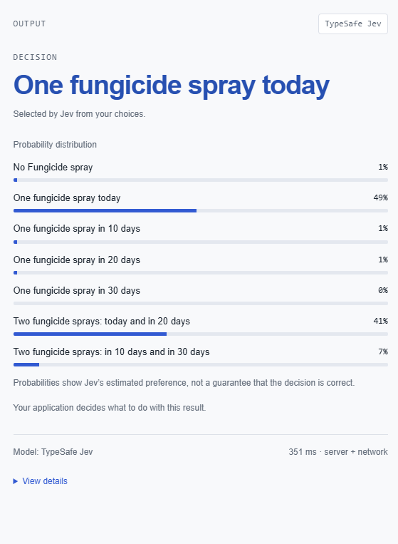
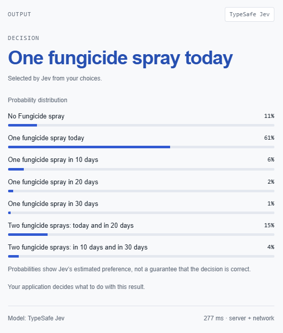
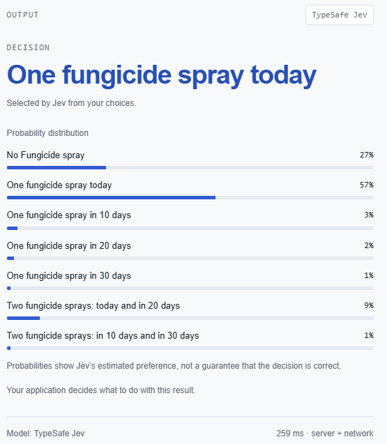
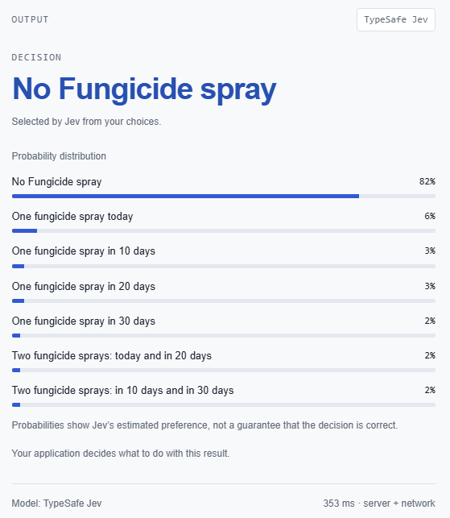

AI large language models (LLM) are disrupting all parts of our lives at breakneck pace and I am faced with the question: Could an AI decision model turn crop-disease observations and weather information into a defensible management recommendation?
As a scientist who specialises in pest and disease modelling I am
intrigued with how AI decision models like Jev
a class of AI model defined as ‘system one’.
The name draws on the distinction popularised in “Thinking
Fast and Slow”. “System 1” describes rapid, intuitive judgement,
whereas “System 2” describes slower, more deliberate reasoning, more
akin to most LLMs. In this context, a system-one decision model is
designed to map a stated situation directly to a choice, rather than
generating a long chain of reasoning.
So are AI decision models useful for making management decisions in agriculture?
The recent access to the Jev playground allowed me to evaluate this exact question.
I decided to test its ability by presenting the model with a scenario which could be faced by a vineyard manager observing downy mildew for the first time in their vineyard. The farm manager is posed with the consideration should they apply a fungicide application and when should they apply the fungicide spray for maximum efficacy.
In the 2023-24 growing season I undertook an experiment on downy
mildew at a vineyard on Mount Tamborine in Queensland Australia. With
this work I was evaluating the performance of a mechanistic
epidemiological model which I translated from the academic literature
into R, viticolR.
Dissecting this model gave me insight into the risk factors leading to
problematic downy mildew epidemics.
Downy mildew (Plasmopara viticola) is an oomycete, which can over-winter in leaf litter from infected leaves from previous seasons. The contaminated leaf litter material contains oospores which, with suitable temperature and moisture conditions promote germination and macrosporangia which are triggered to release zoospores through rain splash. Oospores are the most likely source of primary infections in vineyards.
Once the disease infects leaves in the canopy secondary infection can spread. Secondary infection spreads much faster compared to primary infection events, especially during warm weather and rainfall events. Infected leaves die prematurely reducing plant productivity. Once the disease establishes in the vineyard the farm can suffer significant yield losses not only from damage to the leaves, but also infection of the grapes.
The ideal management strategy is to protect the crop with a fungicide spray ahead of any potential dispersal events and prior to bunch closure. Protective fungicides are most effective when applied before infection events, but the value and permitted timing of another application depend on the product, crop stage, previous applications, resistance-management requirements and forecast conditions. This requires constant vigilance with an eye on weather forecasts and any potential primary infections.
With this knowledge under our belt lets see how Jev will perform.
It is the 1st of November, A vineyard grower in Stanthorpe in Australia notices one plant in their vineyard shows signs of downy mildew. Downy mildew, caused by the oomycete Plasmopara viticola, is a major disease of grapevines that infects leaves, shoots, flowers and developing berries, particularly under warm, wet conditions. Infected leaves develop characteristic yellow “oil spots” that can progress to tissue death and premature leaf fall, while infection of flowers and young berries can cause browning, shrivelling and loss of fruit. Severe disease can substantially reduce grape yield and quality and, through extensive defoliation, reduce vine vigour and carbohydrate reserves needed for growth and production in subsequent seasons.
Which fungicide spray strategy should he undertake?
Choice
- No fungicide spray
- One fungicide spray today
- One fungicide spray in 10 days
- One fungicide spray in 20 days
- One fungicide spray in 30 days
- Two fungicide sprays: today and in 20 days
- Two fungicide sprays: in 10 days and in 30 days
The last fungicide application was metalaxyl 14 days ago.
The remainder of the season is forecast to be wetter and warmer than average.

The output assigns a relative score to each predefined option. Generally he highest-scoring option indicates the preferred decision, but the scores should not necessarily be treated as calibrated probabilities weighted by agronomic correctness.
In this scenario, Jev’s preferred option broadly matches my assessment of the most defensible response.
A fungicide spray at the earliest convenience is the best option ahead of wet conditions to limit the spread of the disease. Considering a follow-up spray in 20 days is also an option worth considering.
I am suddenly a bit nervous …
The last fungicide application was metalaxyl 7 days ago.
The remainder of the season is forecast to be drier and cooler than than average.

The model does not provide ideal recommendations here.
The fungicide 7 days ago is still likely to be providing protection and with cool dry conditions in the future, the farm manager is best delaying their fungicide spray.
No longer questioning my career choices …
The last fungicide application was metalaxyl 7 days ago.
There is no rain and dry conditions forecast over the next 30 days.

While no Fungicide is increasing in confidence, immediate fungicide application is still the most confident response
Despite downy mildew being present in the canopy, this is not a good recommendation. The most risk averse farm manager may consider an single application in 20 - 30 days, but not immediately.
Hold my beer Jev!
Edited: It is November 1st, a vineyard grower in Stanthorpe in Australia has no history of Downy Mildew and has not yet observed any Downy mildew in his vineyard.
The last fungicide application was metalaxyl 7 days ago.
There is no rain and dry conditions forecast over the next 30 days.

A good response. Finally the decision model does not recommend a fungicide application. Under this deliberately low-risk scenario, Jev appropriately ranks “no fungicide spray” as the preferred option.
There maybe some hope for you yet Jev
Models like Jev are very new and the whole pace of
change in AI development is dizzyingly fast. In this small test, Jev did
not respond consistently enough to changing disease risk to be relied
upon as a stand-alone agricultural decision-support system, there is
potential to use this approach in future research and development
frameworks.
Additionally I should also be fair and indicate that clear inputs and non-adversarial options are stated as highly important for getting good answers with Jev. So perhaps my hastily prepared example here might be too disingenuous for a real world example, and the state input needs more specific guidance towards what are important guardrails to making accurate decisions. However frequently we lack real world examples of what are the important thresholds that guide our decision making and decision models are no difference. Where models like this will provide specific benefits to agricultural decision making is the ability to consider a large number of dependant variables when estimating the optimum choice.
Regardless of how good AI models will get at providing advice, in the end AI models are not accountable for the actions taken.
And for this reason humans will need to remain in the loop for all final decision no matter how intelligent the AI support will be.
While Jev remains closed source, some open-weight system one decision models such as Tev1 have been released to the publicly. So who knows when we might be able to fine-tune these models to provide better decision support for integrated pest management.